Pokémon Rojo (Kanto, 1996)
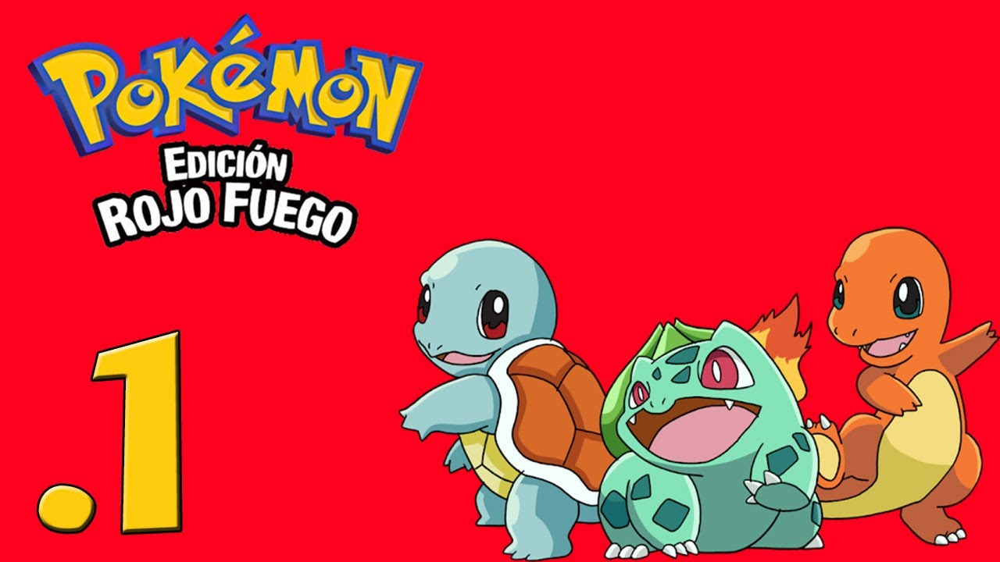La historia sigue a un joven de Pueblo Paleta, conocido como Red, en la región de Kanto, quien inicia su viaje con su primer Pokémon de manos del Profesor Oak. Su meta principal es vencer a los ocho Líderes de Gimnasio para obtener las Medallas y clasificar para la Liga Pokémon. En el camino, debe desmantelar y detener los planes del Equipo Rocket, una organización criminal liderada por Giovanni que utiliza Pokémon para robar y obtener poder. El protagonista debe liberar a los Pokémon robados, derrotar a Giovanni y finalmente enfrentarse a su rival, Blue, en la Liga para convertirse en el Campeón de Kanto.
Pokémon Azul (Kanto, 1996)

Esta versión narra esencialmente la misma aventura épica. El protagonista recorre Kanto con el doble objetivo de conquistar los Gimnasios y erradicar la amenaza del Equipo Rocket. La trama se centra en las acciones del protagonista para exponer y desmantelar las operaciones de Giovanni en lugares clave como la Torre Pokémon y el Casino de Ciudad Azulona. Al derrotar a Giovanni, el héroe demuestra que la fuerza proviene del vínculo con los Pokémon, preparándose para el enfrentamiento final con su rival en la Liga Pokémon, lo que sella su título de Campeón.
Pokémon Oro (Johto, 1999)
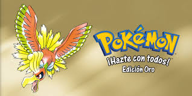El héroe, que comienza en Pueblo Primavera de la región de Johto, emprende el tradicional viaje de los ocho Gimnasios. La narrativa introduce un elemento místico con los legendarios Ho-Oh y Lugia. A lo largo de su viaje, debe enfrentarse a los remanentes del Equipo Rocket, quienes intentan resurgir tras su derrota en Kanto, buscando reactivar sus operaciones para encontrar y manipular al Pokémon Legendario. Tras superar los desafíos locales, derrotar a los Élite Four y al Campeón de la Liga, el héroe es recompensado con la oportunidad única de regresar a Kanto para enfrentarse a sus Líderes de Gimnasio y culminar su viaje con un duelo final contra el legendario entrenador Red en la cima del Monte Plateado.
Pokémon Plata (Johto, 1999)
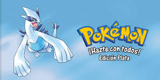La trama principal en Plata es idéntica a Oro, siguiendo el viaje por los Gimnasios de Johto y el enfrentamiento contra el resurgimiento del Equipo Rocket, quienes intentan llevar a cabo planes desesperados como la manipulación de ondas de radio en la Torre de Radio de Ciudad Trigal. En esta versión, hay un mayor énfasis en la conexión con la tradición de Johto, en particular con el Pokémon legendario que adorna la portada. Una vez que el Equipo Rocket es derrotado, la paz es restaurada y el protagonista se corona como Campeón, abriendo la puerta para el extenso contenido post-juego en la región de Kanto.
Pokémon Rubí (Hoenn, 2002)
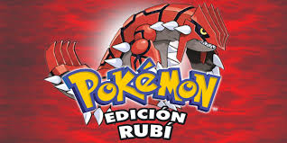La historia se ambienta en la región tropical de Hoenn, donde el protagonista se ve atrapado en una escalada de conflicto entre dos organizaciones con fines opuestos: el Equipo Aqua y el Equipo Magma. El Equipo Magma, liderado por Maxie, cree que la humanidad solo puede prosperar expandiendo la tierra y busca despertar a Groudon, el Pokémon de la tierra. El héroe debe infiltrarse en las bases del Equipo Magma, detener sus planes en el Monte Cenizo y la Guarida Magma, e impedir que desaten un desastre natural que podría desequilibrar el ecosistema global de Hoenn.
Pokémon Zafiro (Hoenn, 2002)
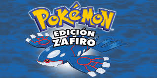La narrativa en Zafiro es un reflejo de Rubí, pero con la diferencia de que el Equipo Aqua, liderado por Archie, es la facción que causa el conflicto central. El Equipo Aqua sostiene que los seres vivos deben depender del mar, y su objetivo es despertar a Kyogre, el Pokémon del océano, para expandir la masa de agua a expensas de la tierra. El protagonista tiene la misión de oponerse a Archie, evitar que acceda a las esferas ancestrales y detener el despertar de Kyogre antes de que inunde la región y cause un caos climático irreversible.
Pokémon Diamante (Sinnoh, 2006)
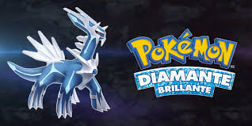En la fría región de Sinnoh, el protagonista se enfrenta al Equipo Galaxia, una organización que persigue objetivos metafísicos y destructivos. Liderado por el nihilista Cyrus, el equipo busca apoderarse de los Pokémon legendarios, en esta versión Dialga, el dios del tiempo. Cyrus planea usar la esencia de Dialga, junto con la de Palkia, para convocar al Pokémon Renegado y así destruir el universo actual para recrear uno nuevo a su imagen: un mundo sin emociones ni espíritu. El héroe debe viajar al Monte Corona e intervenir en la Columna Lanza para salvar la realidad misma del colapso temporal.
Pokémon Perla (Sinnoh, 2006)
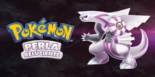Similar a Diamante, la aventura en Perla coloca al protagonista directamente en el camino de las ambiciones del Equipo Galaxia y Cyrus. El foco en esta versión se pone en la captura de Palkia, el Pokémon legendario del espacio. La misión del jugador es detener a Cyrus en la Columna Lanza antes de que pueda manipular a Palkia para desequilibrar el espacio-tiempo de la dimensión. Además de la misión de salvar el universo, el protagonista también tiene el objetivo de completar la Pokédex de Sinnoh y convertirse en el Campeón de la Liga Pokémon.
Pokémon Blanco (Teselia/Unova, 2010)
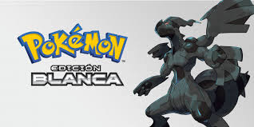En la región de Teselia (Unova), la historia toma un giro ideológico. El protagonista se enfrenta al Equipo Plasma, un grupo radical que, bajo la fachada de ser libertadores de los Pokémon, busca en realidad dominar el mundo. Su líder, N, es un joven de corazón puro manipulado que cree que los Pokémon deben ser liberados de la 'esclavitud' humana. N se convierte en el Campeón de la Liga tras derrotar a Alder, y el héroe debe enfrentarse a él y al legendario Pokémon Reshiram (o Zekrom) en un épico duelo en el castillo de N, que emerge del suelo de la Liga, para demostrar que la conexión basada en la confianza entre humanos y Pokémon es crucial y justa.
Pokémon Negro (Teselia/Unova, 2010)
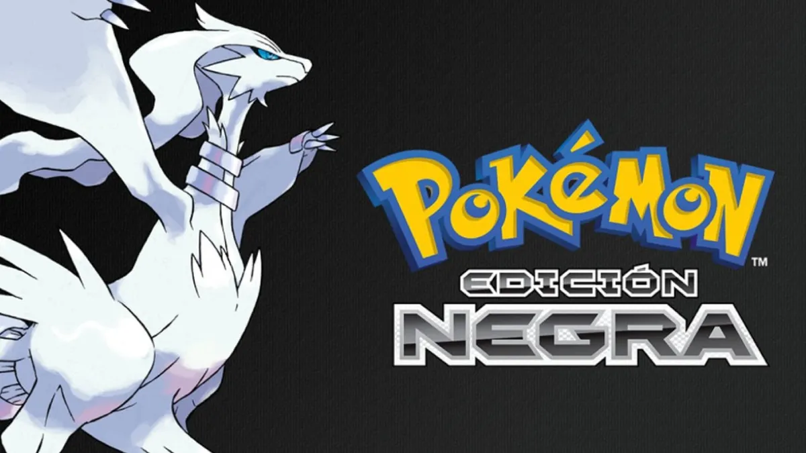La narrativa en Negro es prácticamente idéntica a Blanco, centrada en el conflicto ideológico con el Equipo Plasma. El protagonista sigue enfrentándose a las filosofías extremas de N y a la figura manipuladora detrás de él, Ghetsis. En esta versión, el héroe se alía con el legendario Pokémon Zekrom (la verdad) o Reshiram (los ideales). La aventura es una carrera contra el tiempo para alcanzar a N y evitar que el Equipo Plasma use su influencia para forzar una separación entre humanos y Pokémon, desvelando finalmente los verdaderos y oscuros motivos de Ghetsis para dominar la región.
Pokémon X (Kalos, 2013)
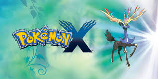La aventura en Kalos inicia con el descubrimiento del fenómeno de la Megaevolución. El protagonista se encuentra con el Equipo Flare, una organización elitista dirigida por el carismático Lysandre. Lysandre, obsesionado con la belleza eterna, busca activar una arma ancestral de hace 3,000 años para eliminar toda vida que no sea de su agrado y crear un "mundo ideal". Para lograrlo, intentan robar la energía vital de Xerneas, el Pokémon de la vida, para alimentar el arma. El protagonista debe descender a la base secreta de Lysandre para evitar que esta peligrosa máquina cause una aniquilación masiva y asegurar la supervivencia de la región.
Pokémon Y (Kalos, 2013)
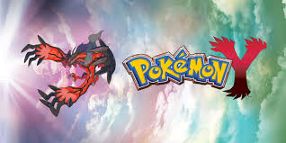En Y, la trama sigue el mismo hilo dramático, enfrentando al protagonista contra el Equipo Flare y Lysandre. Sin embargo, en esta versión el foco está en Yveltal, el Pokémon de la destrucción. Lysandre intenta utilizar el poder de Yveltal, un Pokémon que absorbe la energía vital, para activar el arma ancestral. El protagonista tiene la misión de frustrar la activación del arma, lo que llevaría a la destrucción masiva, deteniendo a Lysandre y salvando a la región de Kalos de un destino apocalíptico y del colapso de la energía vital.
Pokémon Sol (Alola, 2016)
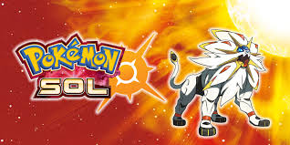El protagonista se muda a la región tropical de Alola y se embarca en el "Recorrido Insular" en lugar de coleccionar medallas de gimnasio. Esta prueba consiste en superar desafíos de Totem Pokémon y Grandes Pruebas en las cuatro islas. La trama principal se complica con el misterio de los Ultraentes, criaturas de otra dimensión que aparecen a través de agujeros de gusano dimensionales. El héroe se une a la Fundación Æther, pero pronto debe enfrentarse al Equipo Skull y a los oscuros planes de la presidenta de la Fundación, Lusamine, que busca manipular a los Ultraentes para sus propios y egoístas fines, poniendo en peligro la seguridad de la dimensión de Alola.
Pokémon Luna (Alola, 2016)
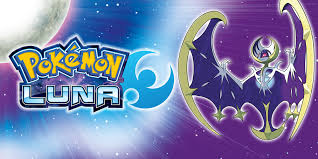En Luna, el protagonista también realiza el Recorrido Insular y se enfrenta a los Ultraentes y a la conspiración de la Fundación Æther, pero hay una diferencia clave en la temporalidad: los eventos del juego ocurren con una diferencia de 12 horas (el día en Sol es la noche en Luna y viceversa). Esto afecta la aparición de ciertos Pokémon y la ambientación de algunas misiones. El clímax narrativo implica también el viaje a otra dimensión, Ultra-Espacio, para enfrentarse a Lusamine y su obsesión con los Ultraentes.
Pokémon Espada (Galar, 2019)
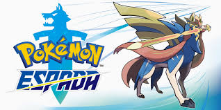El protagonista viaja por la región de Galar con el objetivo de participar en el Desafío de Gimnasios y alcanzar la Copa de Campeones. En Galar, el fenómeno Dinamax permite que los Pokémon se vuelvan gigantes en combate. La trama se complica cuando el carismático presidente de la Liga, Rose, revela sus verdaderos planes al orquestar "El Día Oscuro" y liberar a Eternatus. Rose busca desatar una fuente ilimitada de energía, pero pone en riesgo la destrucción de la región. El protagonista debe unirse al Pokémon legendario de la espada, Zacian, para detener la catástrofe y salvar a Galar.
Pokémon Escudo (Galar, 2019)
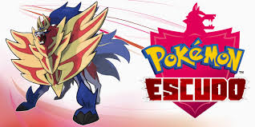Escudo ofrece la misma estructura de viaje a través del Desafío de Gimnasios de Galar. La historia de la conspiración de Rose y la amenaza de "El Día Oscuro" es idéntica, pero el enfoque legendario es diferente. En esta versión, el protagonista se alía con el Pokémon legendario del escudo, Zamazenta, para enfrentar la crisis energética que amenaza con destruir Galar. La misión principal sigue siendo frustrar los planes de Rose y restaurar la paz en la región antes de convertirse en el nuevo Campeón.
Pokémon Escarlata (Paldea, 2022)
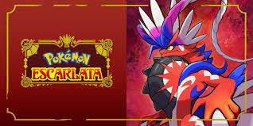El protagonista se matricula en la Academia Naranja de la región de Paldea e inicia una aventura no lineal conocida como la "Búsqueda del Tesoro". Los jugadores pueden elegir libremente entre tres caminos principales: la tradicional ruta de la Liga Pokémon, el enfrentamiento contra el Equipo Star (una pandilla escolar que representa a los estudiantes rebeldes) y la búsqueda de hierbas raras en la Senda Legendaria junto a Arven. Todos los caminos convergen en un misterioso evento en la Zona Cero, un área en el centro de Paldea, donde se revelan los secretos del tiempo, el Profesor Turo y el fenómeno de la Teracristalización.
Pokémon Púrpura (Paldea, 2022)
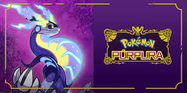En esta versión de Paldea, la estructura de la "Búsqueda del Tesoro" y los tres caminos narrativos (Liga, Team Star y Senda Legendaria) es la misma. Sin embargo, la narrativa en la Zona Cero se enfoca en el misterio de los viajes temporales y las paradojas del tiempo. Las diferencias radican en el Profesor (Profesora Albora en lugar de Profesor Turo), el legendario final y los Pokémon Paradoja que aparecen. El objetivo es desentrañar los secretos de la Zona Cero y el fenómeno de la Teracristalización mientras se navega por una trama compleja sobre los Pokémon del pasado.